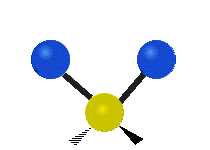
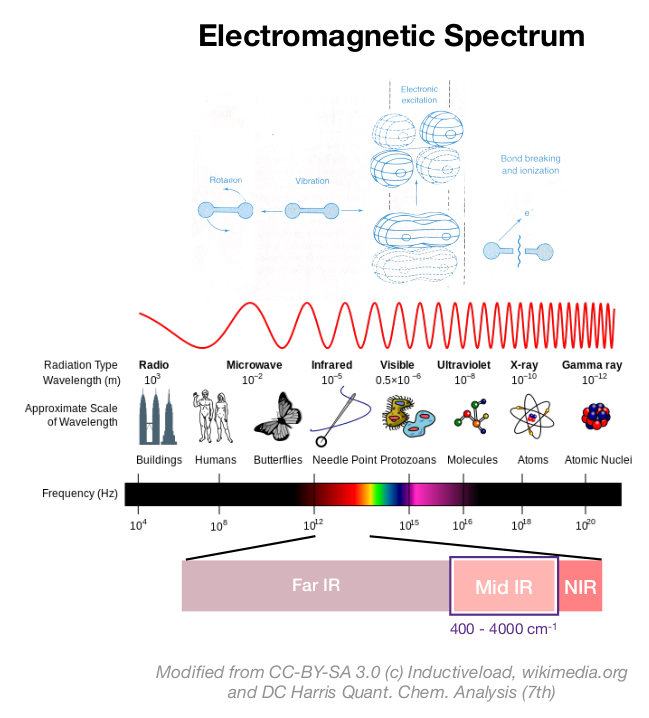
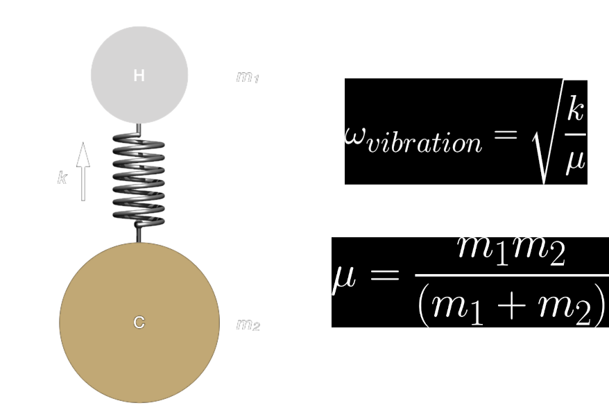
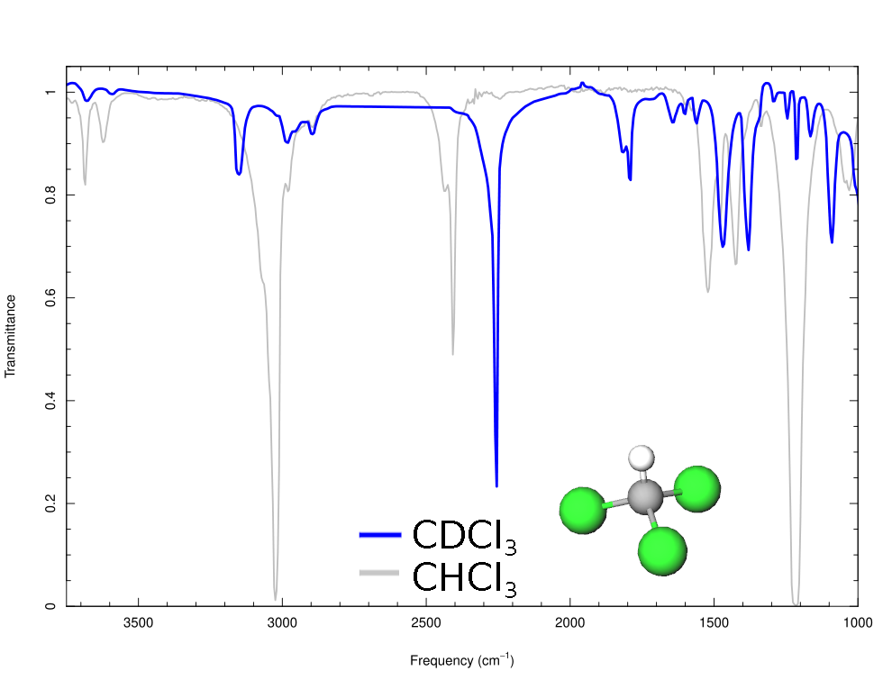
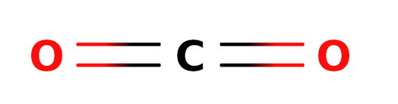
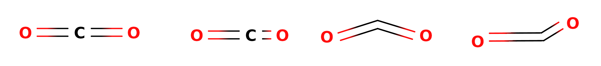
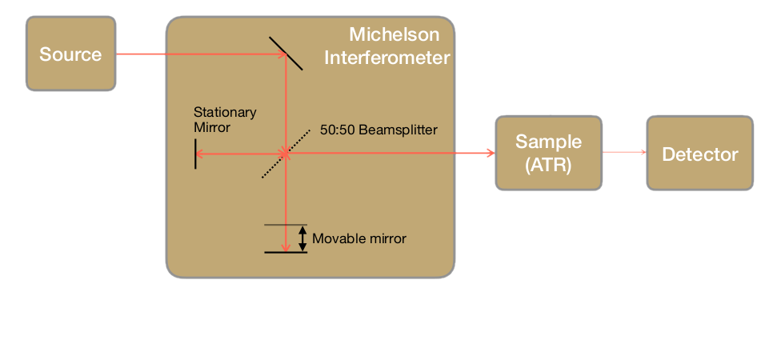
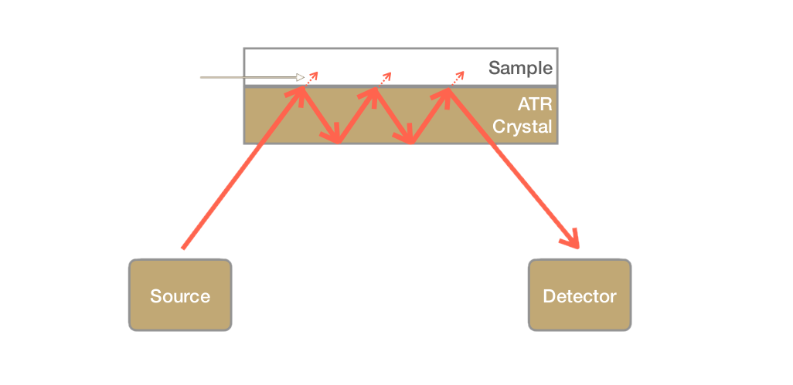

layout: true --- <h2 style = "text-align: right; font-weight: bold;">12.0.1</h2> <h1 style = "text-align: left; font-weight: bold; margin-left: 40px;">Week 12 Intro</h1> --- <div style="margin-top: 100px;"></div> - We have finished the MS unit. You should understand: - 5 Parts of a MS - be able to describe purpose and operating principals of each - Types of sources (esp. EI vs ICP) - Features of a Mass Spectrum - Structure Elucidation via MS (we will keep practicing this!) - Vacuum Systems --- # Video 11.1.2? What is the mean free path for a small organic molecule at 10$^{-5}$ torr? (assume $d$ = 5 Å) $$ \lambda = \frac{k_BT}{Pd^2\pi \sqrt{2}} $$ $$ k_B = 1.38 \times 10^{-23} \frac{\text{J}}{\text{K}} $$ -- $$ \lambda = \frac{(1.38 \times 10^{-23} \text{J K}^{-1} )(298.15 \text{ K})}{(1 \times 10^{-3} \text{ Pa})(5 \times 10^{-10}\text{ m})^2\pi \sqrt{2}} = 4 \text{m} $$ --- What is the mean free path for a small organic molecule at 1 atm? (assume $d$ = 5 Å) --- <h2 style = "text-align: right; font-weight: bold;">12.1.1</h2> <h1 style = "text-align: left; font-weight: bold; margin-left: 40px;">Infrared Spectroscopy</h1> <h5 style = "text-align: left; font-weight: bold; margin-left: 40px;">Granger 11.1</h5> <img src="img/ftir_Symmetrical_stretching.gif" style = "margin-left: auto; margin-right: auto; filter: invert(1); width: 110px;"> <img src="img/ftir_Asymmetrical_stretching.gif" style = "margin-left: auto; margin-right: auto; filter: invert(1); width: 110px;">  <img src="img/ftir_Scissoring.gif" style = "margin-left: auto; margin-right: auto; filter: invert(1); width: 110px;"> <img src="img/ftir_Wagging.gif" style = "margin-left: auto; margin-right: auto; ; filter: invert(1); width: 110px;"> --- class: center  --- class: center  ---  <iframe style="width: 500px; height: 300px;" frameborder="0" src="https://embed.molview.org/v1/?mode=balls&cid=71583"></iframe> --- **Normal Modes ($m$) = ** - $3N - 6$ (non-linear) - $3N - 5$ (linear) **Streching (symmetric & asymmetric)** <img src="img/ftir_Symmetrical_stretching.gif" style = "margin-left: auto; margin-right: auto; filter: invert(1); width: 110px;"> <img src="img/ftir_Asymmetrical_stretching.gif" style = "margin-left: auto; margin-right: auto; filter: invert(1); width: 110px;"> **In-plane Bending (scissoring & rocking)** <img src="img/ftir_Scissoring.gif" style = "margin-left: auto; margin-right: auto; filter: invert(1); width: 110px;"> **Out-of-plane Bending (wagging & twisting)** <img src="img/ftir_Wagging.gif" style = "margin-left: auto; margin-right: auto; ; filter: invert(1); width: 110px;"> --- <center>  </center> <img src="https://webbook.nist.gov/cgi/cbook.cgi?Spec=C124389&Index=1&Type=IR&Large=on" style = "margin-left: auto; margin-right: auto;"> ---  <img src="https://webbook.nist.gov/cgi/cbook.cgi?Spec=C124389&Index=1&Type=IR&Large=on" style = "margin-left: auto; margin-right: auto;"> --- <img src="https://i2.wp.com/www.compoundchem.com/wp-content/uploads/2015/02/Analytical-Chemistry-Infrared-Spectroscopy.png?ssl=1" style = "margin-left: auto; margin-right: auto;"> --- <h2 style = "text-align: right; font-weight: bold;">12.1.2</h2> <h1 style = "text-align: left; font-weight: bold; margin-left: 40px;">Infrared Spectroscopy: Instrumentation</h1> <h5 style = "text-align: left; font-weight: bold; margin-left: 40px;">Granger 11.2-11.6, 11.8</h5> --- Types of IR: - Scanning/dispersive - Fourier Transform -- - why?? ---  ---  --- class: center <img src="https://upload.wikimedia.org/wikipedia/commons/thumb/9/92/Rain_sensor_en.svg/512px-Rain_sensor_en.svg.png" style = "margin-left: auto; margin-right: auto;"> .image-credit[Puppenbenutzer via Wikimedia / [CC BY 3.0](https://commons.wikimedia.org/w/index.php?curid=6505218)] <!-- =============================================================================== -->